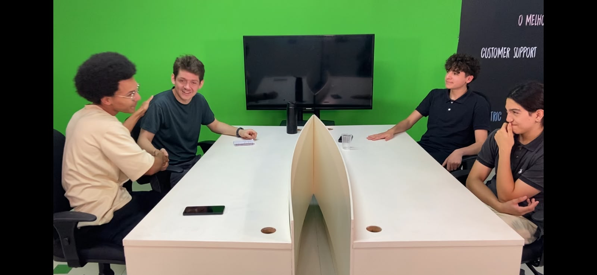

Carros elétricos x combustão
Renou e Pimenta são intrevisatados e comentam sobre o assunto mais comentado do monento, a guerra infinita entre carros a combustão e os elétricos. Abordamos os pontos mais criticos de cada lado da história. Qual será a opinião dos profissionais sobre o futuro do novo mundo automtoivo?
▶ Assistir Episódio